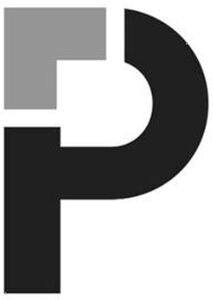

Trade Mark Journal No.2025/020 16 May 2025
WO0000001849004 (3,5,9,10,35,42,44)
Office of origin: Israel
Date of International Registration:19 December 2024
Date of designation in the UK:
19 December 2024

International priority date claimed: 14 October 2024
(Israel)
(377857)
- Class 3
- Cleaning preparations; soaps; perfumery; essential oils; cosmetics; hair lotions; shampoos; dentifrices; cosmetic creams; cosmetic tanning preparations; cosmetic preparations for face and body skin care; sun care preparations; make-up preparations; cosmetic preparations for personal hygiene; cosmetic preparations for intimate care; non-medicated preparations for the treatment of hemorrhoids, fissure, skin rashes, eczema, fungal infections, and itching; non-medicated skin care preparations for the treatment of hemorrhoids, fissure, skin rashes, eczema, fungal infections, and itching.
- Class 5
- Pharmaceutical preparations for the treatment of dermatological, ophthalmic, respiratory, bacterial-based, urological, hormonal, gastrointestinal, cardiovascular, and psychiatric diseases and disorders; pharmaceutical preparations for the treatment of diabetes, migraines, and seizures; pharmaceutical preparations for use in pain management; transdermal patches for use in the treatment of nausea and vomiting; transdermal patches for the delivery of hormonal preparations; pharmaceutical preparations for inhalation for use in treatment of respiratory diseases and disorders and COPD; inhalers sold filled with aerosol inhalation products; nasal and oral spray preparations; anti-infective preparations; antiviral preparations; antibiotics; antifungal preparations; anti-inflammatory preparations; cough treatment preparations; pharmaceutical preparations for use as a vehicle for compounding pharmaceuticals; topical pharmaceutical and medical preparations for the treatment of vaginal infections; anti-fungal preparations for diaper rash, for antibiotic use, and for the treatment of alopecia; medical gels, creams and lubricants; disposable test strips for measuring blood glucose levels; suppositories, oral analgesics, topical analgesics, antacids, antihistamines, cough syrups, cough-expectorants, cough drops, decongestant preparations such as tablets, capsules, nasal sprays and oral products; eye drops; dietary food supplements; laxatives; sleeping preparations; topical antibiotic creams and ointments; topical preparations for the treatment of alopecia; medicated pads and wipes; hormonal replacement therapy preparations; hormonal preparations; topical pharmaceutical preparations; dermal and transdermal preparations; pharmaceutical preparations for the treatment of gastrointestinal diseases, disorders and diagnostics; antiparasitic preparations for veterinary purposes; vaccines; biosimilar and biologics products; immunoglobulin products; human antihemophilic factor products; preparations for the treatment of acne and other skin disorders; preparations for the treatment of infantile haemangioma; medicated preparations for the treatment of hemorrhoids, fissure, skin rashes, eczema, fungal infections, and itching; chemotherapy preparations; oncology and hemato-oncology preparations; pre-filled medical kits and injections; pharmaceutical preparations for the treatment of antidepressant preparations; pro-biotic medical preparations; bowel cleansing preparations; medicated lozenges and oral sprays; pharmaceutical preparations for the treatment of cold sores; pharmaceutical preparations for the treatment of sleeping disorders; pharmaceutical preparations for the treatment of pain; pharmaceutical preparations for the treatment of colds; pharmaceutical preparations for the treatment of flu; pharmaceutical preparations for the treatment of allergy; pharmaceutical preparations for the treatment of gastrointestinal diseases and disorders; medicated smoking cessation gums, lozenges and oral sprays; pharmaceuticals for treating vaginal infections; lubricants for personal use; hygienic preparations for medical use, namely medicated preparations for intimate hygiene; vitamin preparations; mineral food-supplements; food supplements for medical use; preparations based on minerals, for medical use; medicinal drinks; pharmaceutical preparations against sunburn; pharmaceutical preparations for skin care; pharmaceutical and medicinal preparations and substances for smoking cessation; probiotic supplement products; medical testing strips.
- Class 9
- Apparatus and instruments for checking, supervision, recording, transmission, processing or reproduction of sound or images; data processing equipment; computer software and programs for medical, laboratory and diagnostic purposes; applications for monitoring health parameters; laboratory articles and equipment.
- Class 10
- Surgical apparatus and instruments; medical apparatus and instruments, namely medical syringes, injection syringes for medical purposes, pistons for use with medical syringes, plungers for use with medical syringes, adapters for use with medical syringes, nozzle caps for use with medical syringes, medical infusion apparatus for therapeutic purposes, medical infusion instruments, plugs for use with instruments for medical infusion, rubber stoppers for use with instruments for medical infusion, blood glucose meters, blood glucose testing kits comprising a blood glucose meter and disposable blood glucose measuring strips for use therewith, insulin delivery injection syringes, insulin pumps and accessories; injection pens, needles, and lancets; prosthesis; surgical implants; medical implants; medications dispensing apparatus and instruments; artificial limbs, eyes and teeth; orthopaedic articles, namely braces, shoe inserts, wrist, neck, back, ankle, knee and elbow supporters, protectors and splints; suture materials; orthodontic appliances; tongue scrapers; oral care devices for medical use; sensors for medical use; blood gas analyzers; medical test equipment; medical point-of-care testing kits; point-of-care medical equipment.
- Class 35
- Business management services in relation to wholesale and retail of pharmaceutical, cosmetic, hygiene and beauty products for human use, food supplements and medical apparatus and instruments; demonstration of goods for promotional purposes; distribution of samples; import-export agency services; providing commercial information; sales promotion; promotional and advertising services; public relations; retail services connected with the sale of medical pharmaceuticals.
- Class 42
- Technical consultancy services in relation to point-of-care products; product development consultancy services and providing technological updates in relation to self-testing products and point of care products; research and development in the fields of pharmaceuticals and medicine; research and development of new products for others; research and development of pharmaceutical preparations; design of pharmaceutical preparations; testing of pharmaceutical preparations.
- Class 44
- Medical consultancy in relation to self-testing and point-of-care products; medical services; veterinary services; hygienic and beauty care for human beings or animals.
PADAGIS US LLC
Representative: Wolff, Bregman and Goller, Technology Park Malha, Bldg 98, 9695101 Jerusalem, ISRAEL